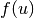
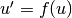
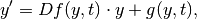
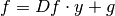
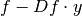

Representations of Right-Hand Sides¶
A differential equation can be specified in many different forms, some of them more useful in the context of exponential integrators.
For example, just specifying the right-hand side  is not very useful, as the Jacobian of  is needed in the computation.
is needed in the computation.
Therefore, there exist a few different classes to represent the right-hand of the ODE  in different ways.
DfRHS¶
If the Jacobian (or a procedural version describing its application to u) is known, one can use the DfRHS class. It is documented as follows:
- class expint.RHS.DfRHS(Df=None, g=None, f=None, normDf=None)¶
Defines a right-hand side of the form:

where Df is the Jacobian of the right hand side  and g(y,t) is the remaining nonlinear term.
If f is given instead of g, g is defined as 
If a numpy array is given for Df instead of a function, it is interpreted as a constant Jacobian and the application of Df to y becomes dot(Df,y)
Examples:
>>> DfRHS(f=lambda x,t: sin(x), Df=lambda x,t: cos(x)) >>> DfRHS(Df=array(((1,2),(0,1))), g=lambda x,t: x**2)
- ApplyDf(x, v)¶
Returns Jacobian Df at point x applied to v
- Applyf(x)¶
Returns the entire right-hand side f = Df*y + g
- Applyg(x)¶
Returns the nonlinear term g(x)
- getDf(x)¶
Returns Jacobian Df at point x. This function is not mandatory.
- normDf(x)¶
Returns norm or approximation of norm of Jacobian Df at x.
This is used to test if Df is singular. If this is never the case (eg. Df is a constant nonsingular matrix), one can just return 1.
Examples¶
The Lotka-Volterra model for modeling predator-prey relationships is implemented as an easy example in the following class. All necessary functions are already implemented in the base class DfRHS.
class LotkaVolterra(DfRHS):
"""
Lotka Volterra (predator-prey) model:
Prey: x' = x(1 - alpha*y)
Predator: y' = y(-1 + beta*x)
where ' representes a derivative wrt time.
"""
def __init__(self,alpha,beta):
self.alpha = alpha
self.beta = beta
f = lambda x: np.array(( x[0]*(1 - alpha*x[1]), x[1]*(-1 + beta*x[0]) ))
Df= lambda x,v: np.dot(np.array(( (1-alpha*x[1], -alpha*x[0]),(beta*x[1], beta*x[0]-1) )),v)
super(LotkaVolterra,self).__init__(Df,f=f)
def normDf(self,x):
# Df^T*Df is hermitian 2x2 matrix. [a,b; b,c]
a = (1-self.alpha*x[1])**2 + (self.beta*x[1])**2
b = -(1-self.alpha*x[1])*self.alpha*x[0] + self.beta*x[1]*(self.beta*x[0]-1)
c = (self.alpha*x[0])**2 + (self.beta*x[0]-1)**2
l1 = 0.5*( (a+c) + np.sqrt((a+c)**2-4*(a*c-b*b)) )
l2 = 0.5*( (a+c) - np.sqrt((a+c)**2-4*(a*c-b*b)) )
return np.sqrt(max(l1,l2))
def name(self):
return r"Lotka-Volterra Model: $\alpha="+str(self.alpha)+r", \beta="+str(self.beta)+"$"
The standard implementation contains the necessary functions for some common cases, for example if the Jacobian can be represented as a numpy.ndarray or a procedural function. For these cases, the Df, g, f keyword arguments can be used, as shown in the above example.
For more complicated ODEs, it may make more sense to write a new class that derives from DfRHS. An example can be found in the class HeatEquation. It represents a high-dimensional (spatial) discretization of the heat equation which is to be solved in time. The application of the Jacobian involves the inverse of a matrix, which is efficiently implemented by computing a sparse LU-decomposition (in the constructor) and then applying forward and backward substitution each time it is applied.
The following function (from the class HeatEquation) contains the implementation of the application of the Jacobian to a vector v:
def ApplyDf(self,u,v):
return -self.M_LUsolve(self.A*v) # M_LUsolve(...) implementes M^{-1}*(...)